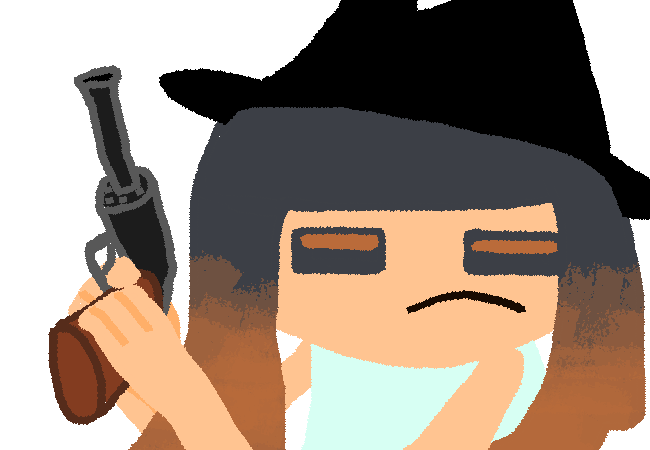

Asof's Arts

specific information about how my me and my ocs are designed and such..
most images done by others have been linked to a profile of theirs!!
asof (me) (hi)


about
this is meee!! a sea anemone from splatoon.. entirely lacking in arms, fat and tailed because that's awesome.. personality wise, well.. me, more or less!! drifty and a little out of it, but also takes up a lot of room through movement..| pronouns | it/its |
|---|---|
| species | sea anemone (although i also consider myself human oh kay..) |
clothing
the clothing consists of a simple blue shirt and floor-length muted purple skirt, but no shoes, socks or headwear.. there's not much to really say about it i pride myself on simplicity..anatomy
thick legs and stomach, *very* large tail!! face is round, and lacks a nose. eyes are narrowed, and typically drawn solid black and narrowed (light sensitivity gang), however feel free to try doing an iris pattern with my epic rgb asofstyles.. if you make me not fat or not tailed i'll be sad also so dontt do that..tentacles
tentacles consist of three bands of color, red, green and blue.. that's my hues!! i think you could change these for goofs, similar rules to how idol hair colors are consistent.. the banding isn't actually a hard cutoff like that. but it is close.. a little bit of blending, if you're so inclined.. additionally, they're slimy.. i like giving them shading with a little bit of light visible at the bottom of the shadow, to imply some fancy subsurface effects..minimally sufficient

about
a sanitized octoling who was not exactly so lucky as to be spared a little of their memories self.. robotic and largely impartial, they still act in the absence of tartar's orders, although it's not clear why. one such act is messaging people on the internet.. wierd!!| pronouns | don't care (friends have defaulted to they/them) |
|---|---|
| species | octoling (corpse) |
clothing
the clothing consists of basically agent eight's outfit.. it doesn't look like it fits well on their gaunt frame though.anatomy
basically just an octoling.. is what i would say if they weren't so wierd!! there is no unneccesary movement, and their body is gaunt.. there's also some bright unblinking eyes, and their hands are warped into claws.. biologically speaking, there is zero breathing or blood circulation.. yknow.. because they're dead..sparsely defined

about
an anemone!! as hobbies, she disassembles tech, writes bad software that no-one uses and shoplifts due to chronic unemployment.. language-wise, she's very brief!! sparsely defined, one could say..| pronouns | she/her with a few asterisks, none of which she considers more important than brevity |
|---|---|
| species | anemone |
clothing
wears black sandals, a blue short skirt and a light blue tank top.. nothing fancy!!anatomy
a normal splatoon anemone, basically!! eyes are notably squarish.. hair is tentacles, as it always is. specific number of tentacles is unimportant, but like somewhere between 6 and 10..recalcitrant aggressor

about
an inkling.. wealthy and compelled to overindulge in atypical vernacular (speak in fancy words), in an attempt to sound smart.. don't worry, it does not work for long, and he can't keep it out without constant access to a dictionary!! he's a big fan of weapons and cop paraphenalia because of he sucks reasons..| pronouns | he/him for a few more character arcs stil. |
|---|---|
| species | inkling |